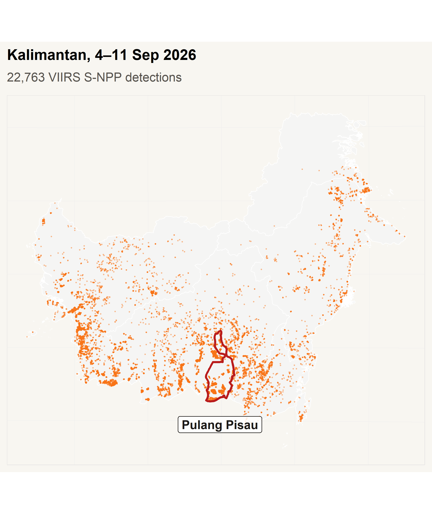
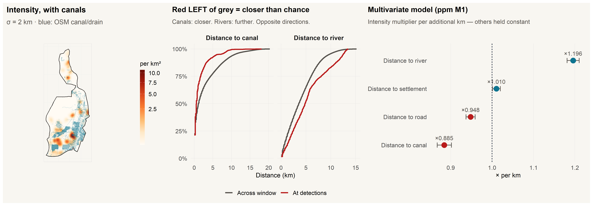
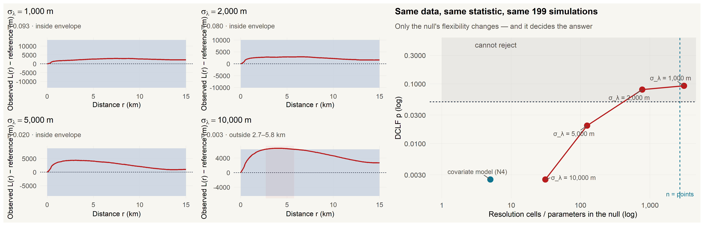
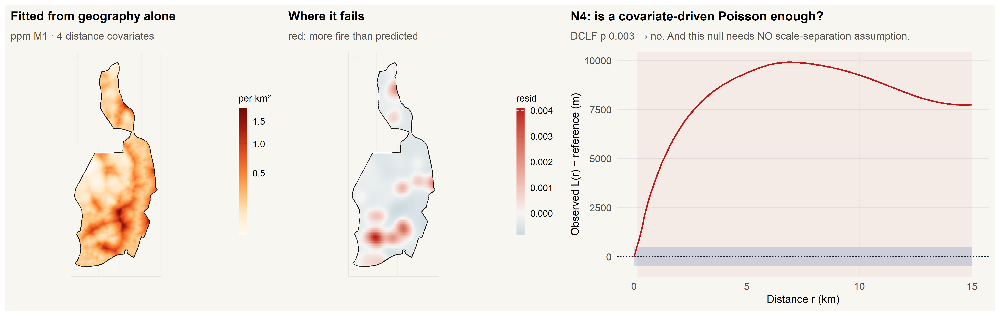
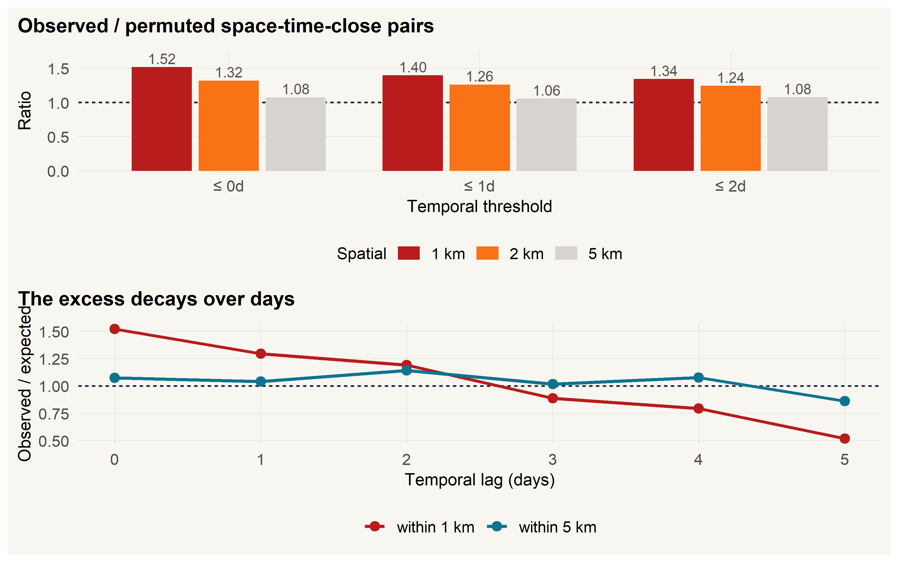

Spatial and spatio-temporal point pattern analysis of active-fire detections
Pulang Pisau Regency, Central Kalimantan · 4–11 September 2026卫星活跃火点的空间与时空点模式分析
中加里曼丹 Pulang Pisau 县 · 2026 年 9 月 4–11 日
2026-09-12
RESEARCH QUESTIONS, AND WHAT THEY RETURNED研究问题,及其答案
Q1 · First order, spaceQ1 · 一阶,空间
How does detection intensity vary across the regency, and is it associated with proximity to engineered drainage rather than to water in general?
探测强度在全县如何变化?它是否与人工排水的邻近度相关,而不只是泛泛地「靠水」?
Q2 · Second order, spaceQ2 · 二阶,空间
Once the large-scale intensity gradient is accounted for, do the detections still show clustering, and over what range of distances?
在扣除大尺度强度梯度之后,探测点是否仍表现出聚集?在什么距离尺度上?
Q3 · Second order, space–timeQ3 · 二阶,时空
Are detections that are close in space also close in time, beyond what each margin alone implies?
空间上靠近的探测点,在时间上是否也靠近?这种靠近的程度,是否超出两个边缘分布各自 所隐含的水平?
~39× Peak-to-mean detection intensity核密度峰值与全县平均值之比
2.1 km Estimated Thomas cluster scaleThomas 模型估计聚集尺度
1.52× Pair ratio: same day, within 1 km同日、1 km 内观测/期望点对数
Where在哪里
Detections sit closer to engineered canals and farther from natural rivers than random locations in the same window.
相对同一窗口内的随机位置,火点更靠近人工运河,而相对远离天然河流。
How怎样聚集
Spatial clustering remains after adjustment for the measured distance covariates.
在控制已测得的距离协变量之后,空间聚集依然存在。
When何时
Same-day pairs are in excess relative to date permutation, and the excess is short-range.
同日邻近点对数高于日期置换下的期望值,且这一超额是短程的。
In one line一句话
The results indicate spatial heterogeneity tied to engineered drainage, local clustering that measured geography does not explain, and short-range space–time association.
结果表明:存在与人工排水相关的空间异质性、已测得的地理条件无法解释的局部聚集, 以及短程的时空关联。
01 · STUDY AREA AND DATA01 · 研究区与数据

3,101 VIIRS 375 m active-fire detectionsVIIRS 375 m 活跃火点探测
8 days 4–11 September 20262026 年 9 月 4–11 日
Why this regency为什么选这个县
Pulang Pisau is peatland in Central Kalimantan carrying the drainage canals left by the Mega Rice Project. The window is the administrative unit that owns the response, not a hull drawn around the data.
Pulang Pisau 位于中加里曼丹泥炭地区,境内分布着百万公顷稻米工程遗留的排水渠网。 研究窗口取承担应对责任的行政单元,而不是围绕数据画出的凸包。
Window研究窗口
9,759 km², EPSG:32749 (UTM 49S). The period is the full extent of the open FIRMS archive at the time of access.
9,759 km²,EPSG:32749(UTM 49S)。时段为取数时 FIRMS 开放档案的 全部范围。
02 · DATA PREPARATION02 · 数据处理
3,101 Detections探测次数
2,715 Pixel-days · primary unit像元-日 · 主分析单位
241 Merged events · sensitivity合并事件 · 敏感性分析
8.8% Pixel-days seen by all three VIIRS sensors三个 VIIRS 传感器共同检出的像元-日
What this rules out这排除了什么
Daily counts are driven by overpass timing and cloud as much as by fire, so no trend claim is made and every intensity is a lower bound.
逐日计数受过境时间与云层的影响不亚于受火情影响,因此全篇不作趋势论断, 而每一个强度都只是下界。
03 · METHODS03 · 分析方法
First order asks where; second order asks whether events interact一阶问「在哪里」,二阶问「事件之间是否交互」
In a single realisation the two are confounded. Every second-order statement below is therefore made relative to an explicit null model, never to a picture.
在单次实现中,这两者是混淆的。因此下文每一项二阶论断,都是相对一个显式的零模型 作出的,不是相对一幅图。
04 · FIRST-ORDER RESULTS04 · 一阶分析结果

559 m Median distance to a canal, at detections火点至运河的中位距离
1,119 m Same, at random locations随机位置的同一距离
After multivariate adjustment多变量调整之后
Intensity falls ×0.885 per km of distance from a canal and rises ×1.196 per km from a river. The two run in opposite directions. That is what separates a drainage mechanism from simple proximity to water.
每远离运河 1 km,强度变为原来的 0.885 倍;每远离河流 1 km,强度变为 1.196 倍。两者方向相反,正是这一点把 排水机制与泛泛的「靠水」区分开。
05 · SENSITIVITY ANALYSIS05 · 敏感性分析

Narrower bandwidth较小带宽
The estimated intensity keeps local variation, so the null already reproduces the clumping. Any further clustering then becomes harder to detect.
估计强度保留了局部变化,零模型本身就能再现成团,因此额外的聚集更难被检出。
Wider bandwidth较大带宽
The estimated intensity is smoother, and for the same data the \(p\)-value falls: 0.093 → 0.080 → 0.020 → 0.003.
估计强度更平滑,而在同一份数据下 \(p\) 值随之下降: 0.093 → 0.080 → 0.020 → 0.003。
Why this matters这为什么重要
The verdict here tracks the null model, not the data. A non-significant result therefore cannot be read as evidence of no clustering. What the next slide changes is the family of null model, not its flexibility.
由于判定追踪的是零模型而不是数据,这里的「不显著」不能读作「没有聚集」的证据。 下文换掉的是零模型的族,而不是它的灵活度,问题由此得到解决。
06 · MODEL COMPARISON06 · 模型比较

| Model模型 | Test检验 | Reading解释 |
|---|---|---|
| Homogeneous Poisson齐次泊松 | rejected拒绝 | Departs from homogeneous randomness不符合全域均匀随机 |
| Covariate Poisson协变量泊松 | \(p =\) 0.003 | Covariates do not explain all clustering协变量不足以解释全部聚集 |
| Thomas cluster processThomas 聚集过程 | \(p =\) 0.69 | Not rejected by the available test现有检验未拒绝 |
2.1 km Estimated cluster scale估计聚集尺度
What the scale is, and is not这个尺度是什么、不是什么
It describes the spatial scale of clustering. It is not a distance of fire spread, and the fitted parent count is the model’s accounting rather than a count of fires.
它描述的是聚集的空间尺度,不是火势蔓延距离;拟合出的母点数量是模型的记账 方式,而不是火的计数。
07 · SPACE–TIME RESULTS07 · 时空分析结果

1.52× Same day, within 1 km · observed / expected同日、1 km 内 · 观测/期望
The null used here这里用的零模型
199 random permutations of the date labels, holding both marginals fixed. It uses no bandwidth and no covariates, which is why it escapes the problem on the previous slide. The null is rejected at all nine space–time thresholds.
对日期标签做 199 次随机置换,同时固定两个边缘分布。它不用带宽、 也不用协变量,这正是它能绕开上一页那个问题的原因。九组时空阈值下,零模型都被拒绝。
Caveat保留
The association may reflect an advancing fire front and multi-day smouldering, not contagion between separate ignitions.
这一关联可能反映火线推进与多日阴燃,而非彼此独立的点火之间的传染。
08 · DISCUSSION08 · 讨论
| Finding研究结果 | Management implication管理建议 | What would have to be established first仍需先行确认的内容 |
|---|---|---|
| Concentration near engineered canals火点集中于人工运河附近 | Prioritise survey and patrol along the drainage network优先沿渠网开展调查与巡查 | Groundwater level and canal condition地下水位与渠道状况 |
| Clustering at a few-kilometre scale数公里尺度的空间聚集 | Plan surveillance at local rather than regency scale按局地尺度而非全县尺度安排监测 | Whether the scale transfers to other regencies该尺度能否推广到其他县 |
| Association at short distance and short lag短距离、短时间间隔上的关联 | Concentrate short-term monitoring near recent detections在近期火点附近集中短期监测 | Separating persistence from new ignition区分持续阴燃与新增点火 |
The boundary of this evidence这份证据的边界
These are associations within one eight-day window, not causal effects. A full fire season, plus hydrological, land-cover and canal-condition data, would be required before any of the right-hand column could be settled.
以上是单一八天窗口内的关联,不是因果效应。要确定右栏中的任何一项,都需要覆盖 完整火季,并纳入水文、土地覆盖与渠道状况数据。
CONCLUSIONS研究结论
What the analysis shows分析显示了什么
Detection intensity varies about 39-fold across the regency, concentrating near engineered drainage and away from natural rivers.
探测强度在全县范围内变化约 39 倍,集中于人工排水 附近,并相对远离天然河流。
What survives the null models哪些结论经得起零模型检验
Clustering at roughly 2.1 km is not explained by the measured geography, and space and time are dependent at short range.
约 2.1 km 尺度的聚集无法由已测得的地理 条件解释,而空间与时间在短程上是相互依赖的。
What it cannot bear它承担不了什么
No trend claim, no causal claim, and no count of distinct fires. The window is eight days and the detections are an observation process, not the fire field.
不作趋势论断、不作因果论断,也不给出不同火场的计数。窗口只有八天,而探测记录是 一个观测过程,不是火场本身。
For planning对规划而言
The evidence supports where to look and how often, at local scale, along the drainage network. It does not support attributing cause, and it does not support forecasting beyond the observed window.
这份证据支持在局地尺度上、沿渠网决定去哪里看、多久看一次;它明确不支持 归因,也不支持把预测外推到观测窗口之外。
ISSS626 · Take-home Exercise 1 · Pulang Pisau active-fire point patternsISSS626 · 课后作业一 · Pulang Pisau 活跃火点模式